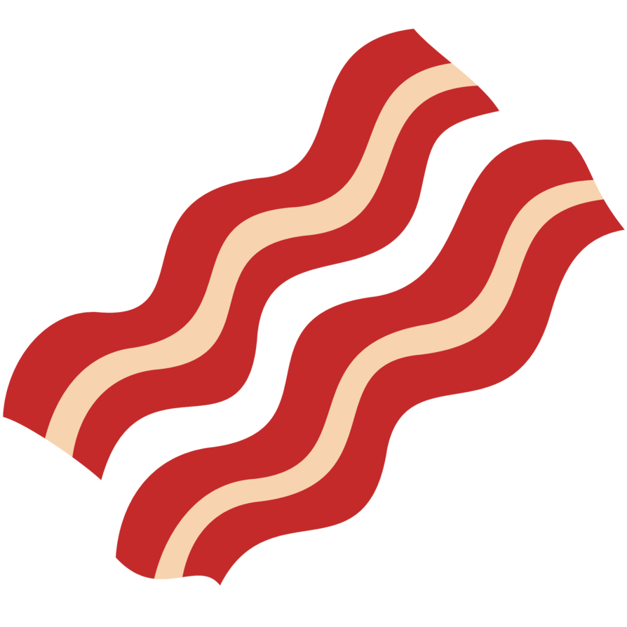
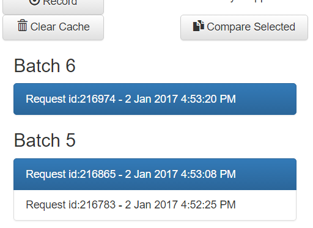
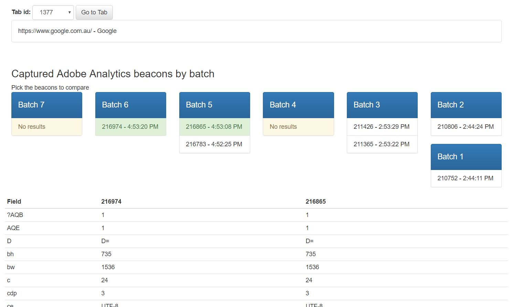
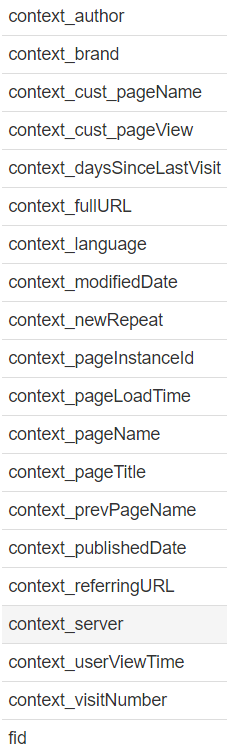

Have some tasty Bacon 
Bacon is an inspection tool to help you troubleshoot your Adobe Analytics beacons. It keeps track of all requests going to Adobe's servers with which you can compare between any two (or more) network calls. Maybe you're testing out a fresh install and making sure it has all the attributes correctly set or have an existing implementation that dropped of a field or two, this tool is for you
Popup
Going counter-clockwise from the upper left, the current tab's chrome-assigned id is shown,
followed
by the Record, Cache Clear, and Compare buttons. Last is Bacon's recording status and help
links.
1. Start and Stop recording
Clicking on Bacon's Record button will allow you
to start listening for Adobe Analytics beacons. This includes calls from ALL open windows for
the
current profile and all network traffic captured until you stop the recording is considered as
one
batch. In addition a small "R" will appear on Bacon's icon to further indicate that it's
currently
recording.
2. Select beacons to compare

After recording a couple of beacons, you will be given the option to select
the
appropriate one by clicking on it. Hold your mouse over the items to give you a partially
cleaned-up
version of the
http call to help narrow down the one you're interested in. Only the network calls made on the
current
tab will be available on this popup. More options are available when you get to the diff page.
Click on the Compare button to confirm your selection and you'll be taken to the Diff page for
further
analysis.
3. Clearing the cache
You can then clear the cache when you're done.
Diff Page

The diff page will be where you'll be spending most of your time comparing one beacon from
another.
The page can be roughly divided into three areas, Tab management, Beacon Selection, and Diff
Table.
The items selected on the popup will be selected as the defaults on this page.
1. Tab Management
The top section of the page is dedicated to everything related to tabs. You
can
select
which tab id you want to filter by and the batches will only show beacons that have been
executed
from the selected tab.
The page will also perform a query to retrieve the url and page title
of the page currently loaded in that tab. You can also navigate back to the tab in case you have
multiple tabs open. If the tab has been closed, the page will let you know.
2. Beacon Selection
The items selected from the popup is likewise selected by default but you
are able to
toggle
the selection status of any visible item by clicking on the beacon.
3. Diff Table

The beacons' urls will be parsed, broken down, and flattened for comparison.
Lists
are flattened by appending the index number to the list name, and the context values are all
prefixed
with
context_

The selected beacons will be parsed and compared against each other. Values that
do not match will be flagged for review and are highlighted in red.
Certain fields like
timestamp are marked 'volatile', colored
gray,
and will not be processed for comparison.
Feature Roadmap
- Delete on a per Batch basis
- Name Beacons and Batches
- Pause script execution on Beacon send
- A better help page
About the author
I muck about quite often so I'm sharing the muck.